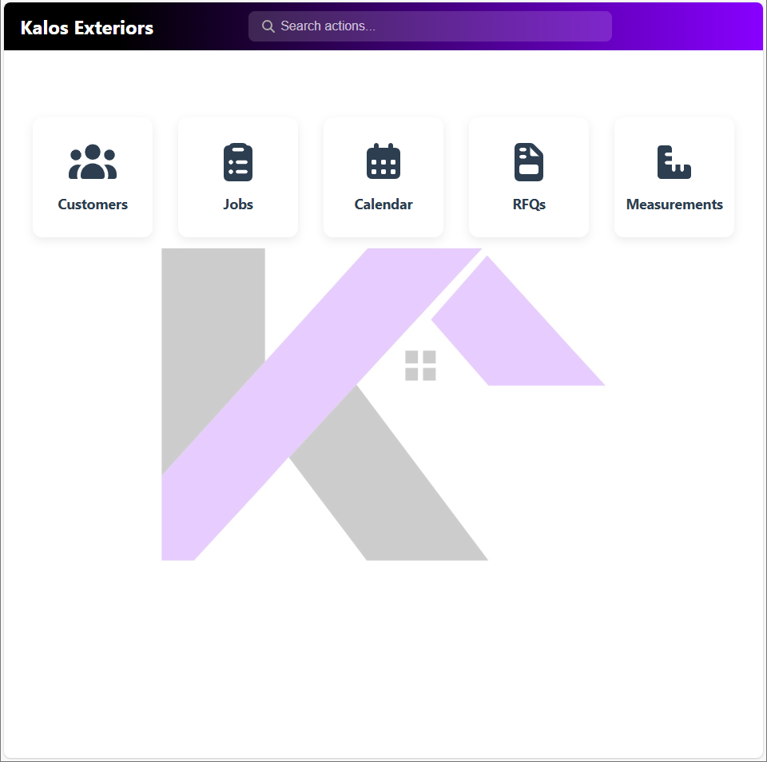

Projects

Space-Optimized Platform & Stairs
Designed and fabricated a multi-level stair platform to maximize space and workflow in a shop. Included CAD modeling, structural analysis, and fabrication planning.

Custom ERP for Roofing Company
Developed a custom ERP system to streamline operations, improve scheduling, and track project progress efficiently. Focused on process optimization and software implementation in manufacturing.
Mechanical Testing & Analysis
Performed ongoing mechanical testing and analysis for steel components, providing data-driven insights for quality improvement and process optimization. Utilized lab techniques, data tracking, and simulation tools.